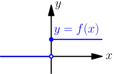
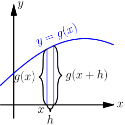
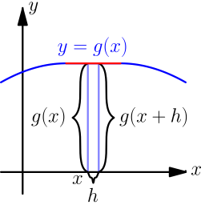

More Derivatives¶
This chapter contains derivative stuff that most people probably find boring, but you might like some of it. It assumes that you have read the first derivative chapter.
Which functions have derivatives?¶
In the first derivative chapter I said that most functions you'll come across have a derivative. Let's be a bit more specific. The derivative doesn't exist in these cases:
-
The function is not continuous; that is, the graph consists of multiple lines. For example, this function is not continuous at $x=0$ and thus $f'(0)$ is not defined:
$$\begin{align} f(x) = \left\{\begin{matrix} 1 \text{ if } x \ge 0\\ 0 \text{ if } x < 0 \end{matrix}\right. \end{align}$$
-
The graph of the function has a spike in it. Derivatives describe "growing speed" and it isn't clear how fast the values grow on top of a spike. For example, the absolute value $|x|$ has a derivative everywhere except at $x=0$.
Of course, there are more precise definitions about continuity and "spikes", but this should be enough to give you some kind of idea about the limitations.
The existence of this limit implies all these things:
$$\begin{align}f'(x) = \lim_{h\to0} \frac{f(x+h)-f(x)}{h} \end{align}$$For example (here $h\to0^+$ means that $h$ approaches 0 from the positive direction, or from right in a graph):
$$\begin{align} &f(x) = \left\{\begin{matrix} 1 \text{ if } x \ge 0 \\ 0 \text{ if } x < 0 \end{matrix}\right. \\ &\lim_{h\to0^+} \frac{f(0+h)-f(0)}{h} = \lim_{h\to0^+} \frac{1-1}{h} = 0 \\ &\lim_{h\to0^-} \frac{f(0+h)-f(0)}{h} = \lim_{h\to0^-} \frac{0-1}{h} = \lim_{h\to0^+} \frac{-1}{-h} = \lim_{h\to0^+} \frac{1}{h} = \infty \end{align}$$0 and $\infty$ are very different, so the limit just doesn't exist. Similarly we'd get $1$ and $-1$ if we tried to evaluate $\frac{d}{dx}|x|$ at $x=0$.
Chain Rule¶
Let's say you want to find the derivative of $(2x)^2$. The derivative of $x^2$ is just $2x$, so isn't the derivative of $(2x)^2$ then $2(2x)=4x$? No, it's not!
When things are nested like this you need to multiply by the derivative of the inner stuff.
$$\begin{align} \frac{d}{dx}(2x)^2 = 2(2x)\ \frac{d}{dx}(2x) = 2(2x)2=8x \end{align}$$This is known as the chain rule, and it looks like this in a general $f$ and $g$ form:
$$\begin{align} \frac{d}{dx}f(g(x)) = f'(g(x))g'(x) \end{align}$$There's a proof below.
Derivative Rules¶
Libraries like sympy are sure handy for finding derivatives, but we can also find the derivative of pretty much anything by hand. In the first derivative chapter we learned to find the derivatives of $c$, $x$ and $x^2$. And if $f$ and $g$ are functions that have a derivative, we know what the derivative of $f(x)+g(x)$ or $f(x)-g(x)$ is.
We can do a lot more, and there's a concise list of derivative rules on the summary page. Most of the rules are proved here, and they are ordered so that they don't use anything that has not been proved before them.
$\frac{d}{dx} (f(x)g(x)) = f'(x)g(x) + f(x)g'(x)$¶
This is messy, but it works.
$$\begin{align} & \frac{d}{dx} (f(x)g(x)) \\ =& \lim_{h\to0} \frac{f(x+h)g(x+h)-f(x)g(x)}{h} \\ =& \lim_{h\to0} \frac{\overbrace{f(x)g(x+h)-f(x)g(x+h)}^\text{this is 0} +f(x+h)g(x+h)-f(x)g(x)}{h} \\ =& \lim_{h\to0} \frac{f(x+h)g(x+h)-f(x)g(x+h)+f(x)g(x+h)-f(x)g(x)}{h} \\ =& \lim_{h\to0} \frac{\bigl(f(x+h)-f(x)\bigr)g(x+h)+f(x)\bigl(g(x+h)-g(x)\bigr)}{h} \\ =& \lim_{h\to0} \left( \frac{\bigl(f(x+h)-f(x)\bigr)g(x+h)}{h} + \frac{f(x)\bigl(g(x+h)-g(x)\bigr)}{h} \right) \\ =& \lim_{h\to0} \left( \frac{f(x+h)-f(x)}{h}g(x+h) + f(x)\frac{g(x+h)-g(x)}{h} \right) \\ =& \lim_{h\to0} \left(\frac{f(x+h)-f(x)}{h}g(x+h)\right) + \lim_{h\to0}\left(f(x)\frac{g(x+h)-g(x)}{h}\right) \\ =& \left(\lim_{h\to0}\frac{f(x+h)-f(x)}{h}\right) \left(\lim_{h\to0}g(x+h)\right) + f(x) \left(\lim_{h\to0}\frac{g(x+h)-g(x)}{h}\right) \\ =& f'(x)g(x) + f(x)g'(x) \end{align}$$$\frac{d}{dx} x^c = c\ x^{c-1}$¶
It's easy to prove that this works for an individual $c$ value. For example, our very first derivative example shows that $\frac{d}{dx} x^2 = 2x$. Here I'll prove that this works with all positive integers using a powerful technique known as induction.
Let's start by showing that this works with $c=1$:
$$\begin{align}\frac{d}{dx} x^1 = \frac{d}{dx} x = 1 = 1x^0 = 1x^{1-1} \end{align}$$Next we'll prove that if the rule works at $c=k$ then it also works at $c=k+1$ where $k$ is a positive integer. Let's write things down just to be clear:
We assume: $\frac{d}{dx} x^k = k x^{k-1}$
We'll prove: $\frac{d}{dx} x^{k+1} = (k+1)x^{(k+1)-1}$
Let's use the $\frac{d}{dx}(f(x)g(x))$ and $\frac{d}{dx} x$ rules we proved above and the assumption.
$$\begin{align} \frac{d}{dx} x^{k+1} &= \frac{d}{dx} (x^k x^1) \\ &= \frac{d}{dx} (x \cdot x^k) \\ &= \left(\frac{d}{dx} x\right) \cdot x^k + x \cdot \left(\frac{d}{dx} x^k\right) \\ &= 1x^k + x \cdot k x^{k-1} \\ &= 1x^k + kx^1x^{k-1} \\ &= 1x^k + kx^k \\ &= (1+k)x^k \\ &= (k+1)x^{(k+1)-1} \end{align}$$We proved that if $\frac{d}{dx} x^k = k x^{k-1}$ then $\frac{d}{dx} x^{k+1} = (k+1)x^{(k+1)-1}$. Now we know that the rule works when $c=1$, and then if we plug in $k=1$ we know it works when $c=2$, and so on.
Note that we only proved that the rule works when $c$ is a positive integer, but it also works when $c$ is e.g. $\frac{1}{2}$. It's possible to prove that the rule isn't limited to positive integers, but that's beyond the scope of this tutorial.
Handy thing: $(a-b)(a+b)=a^2-b^2$
Proof:
$$\begin{align} & \ (a-b)(a+b) \\ =&\ (a-b)a+(a-b)b \\ =&\ aa-ba+ab-bb \\ =&\ a^2 - b^2 \end{align}$$In this case we need to plug in $a=\sqrt{x+h}$ and $b=\sqrt x$.
$\frac{d}{dx} \sqrt x = \displaystyle \frac{1}{2\ \sqrt x}$¶
We could prove this with the $\frac{d}{dx} x^c$ rule because $\sqrt x = x^\frac{1}{2}$, but we proved the $x^c$ rule only for positive integers. Let's survive without it.
$$\begin{align} \frac{d}{dx} \sqrt x &= \lim_{h\to0} \frac{\sqrt{x+h}-\sqrt x}{h} \\ &= \lim_{h\to0} \frac{\bigl(\sqrt{x+h}-\sqrt x\ \bigr) \bigl(\sqrt{x+h}+\sqrt x\ \bigr)}{ h \cdot \bigl(\sqrt{x+h} + \sqrt x\ \bigr)} \\ &= \lim_{h\to0} \frac{\bigl(\sqrt{x+h}\ \bigr)^2-\bigl(\sqrt x\ \bigr)^2}{ h \cdot \bigl(\sqrt{x+h} + \sqrt x\ \bigr)} \\ &= \lim_{h\to0} \frac{(x+h)-x}{h\cdot\bigl(\sqrt{x+h} + \sqrt x\ \bigr)} \\ &= \lim_{h\to0} \frac{h}{h\cdot\bigl(\sqrt{x+h} + \sqrt x\ \bigr)} \\ &= \lim_{h\to0} \frac{1}{\sqrt{x+h} + \sqrt x} \\ &= \frac{1}{\sqrt x + \sqrt x} \\ &= \frac{1}{2\ \sqrt x} \end{align}$$$\frac{d}{dx}(1/x) = \displaystyle \frac{-1}{x^2}$¶
We could use the $\frac{d}{dx} x^c$ rule again because $1/x$ is actually $x^{-1}$, but as before, we haven't proved that it works at $c=-1$ so we'll do this without it.
$$\begin{align} \frac{d}{dx} (1/x) &= \lim_{h\to0} \frac{\frac{1}{x+h} - \frac 1 x}{h} \\ &= \lim_{h\to0} \frac{\frac{x}{(x+h)x} - \frac{x+h}{(x+h)x}}{h} \\ &= \lim_{h\to0} \frac{\left(\frac{x-(x+h)}{(x+h)x}\right)}{h} \\ &= \lim_{h\to0} \frac{x-(x+h)}{(x+h)xh} \\ &= \lim_{h\to0} \frac{x-x-h}{(x+h)xh} \\ &= \lim_{h\to0} \frac{-h}{(x+h)xh} \\ &= \lim_{h\to0} \frac{-1}{(x+h)x} \\ &= \frac{-1}{x^2} \end{align}$$$\frac{d}{dx} f(g(x)) = f'(g(x))g'(x)$¶
This rule looks simple, but it's surprisingly difficult to prove correctly while keeping it easy to read. Here's the best proof I managed to make.
Let's start by plugging stuff into the definition of derivative:
$$\begin{align}g'(x) = \lim_{h\to0} \frac{g(x+h)-g(x)}{h} \end{align}$$$$\begin{align}f'(g(x)) = \lim_{k\to0} \frac{f(g(x)+k)-f(g(x))}{k} \end{align}$$Note that I used $h$ with one limit and $k$ with the other; the limits are completely independent of each other and I wanted to make it stand out. In other words, it doesn't matter how $h$ and $k$ relate to each other as long as both of them approach 0.
The rule can be used only if $g'(x)$ exists, and thus $g$ must be continuous; see the derivative existence stuff above. So, if $h \to 0$ (read: h approaches 0) then $g(x+h) \to g(x)$ and $(g(x+h)-g(x)) \to 0$.
If we put all this together we can set $k=g(x+h)-g(x)$. Now it's time to calculate $f'(g(x))g'(x)$.
$$\begin{align} & f'(g(x))g'(x) \\ =& \lim_{k\to0} \frac{f(g(x)+k)-f(g(x))}{k} \cdot \lim_{h\to0} \frac{g(x+h)-g(x)}{h} \\ =& \lim_{k\to0} \lim_{h\to0} \left( \frac{f(g(x)+k)-f(g(x))}{k} \cdot \frac{g(x+h)-g(x)}{h} \right) \\ =& \lim_{h\to0} \left( \frac{f\bigl(g(x)+g(x+h)-g(x)\bigr)-f(g(x))}{g(x+h)-g(x)} \cdot \frac{g(x+h)-g(x)}{h} \right) \\ =& \lim_{h\to0} \left( \frac{f(g(x+h))-f(g(x))}{g(x+h)-g(x)} \cdot \frac{g(x+h)-g(x)}{h} \right) \\ =& \lim_{h\to0} \frac{f(g(x+h))-f(g(x))}{h} \\ =& \frac{d}{dx} f(g(x)) \end{align}$$This looks nice, but we are not done yet! We divided by $k$. What if $k=g(x+h)-g(x)=0$ when $h \to 0$ but $h \ne 0$? Practically it means that the graph $y=g(x)$ is a horizontal and straight line around $x$ because $g(x+h)=g(x)$ with a small $h$. So, we can say that $g(x)=c$ on this interval ($c$ is a constant) and prove this case separately:
$$\begin{align}f(g(x))g'(x) = f(c) \left(\frac{d}{dx} c\right) = f(c) \cdot 0 = 0 \end{align}$$$$\begin{align}\frac{d}{dx} f(g(x)) = \frac{d}{dx} f(c) = 0 \end{align}$$Look carefully: $\frac{d}{dx} f(c) = 0$ because we differenciated $f(c)$ with respect to $x$, so $f(c)$ was actually yet another constant because it doesn't depend on the value of $x$.
$\frac{d}{dx} \displaystyle \left(\frac{f(x)}{g(x)}\right) = \frac{f'(x)g(x) - f(x)g'(x)}{(g(x))^2}$¶
We need these rules that are proved above:
- $\frac{d}{dx} (f(x)g(x)) = f'(x)g(x) + f(x)g'(x)$
- $\frac{d}{dx} (1/x) = \displaystyle \frac{-1}{x^2}$
- $\frac{d}{dx} f(g(x)) = f'(g(x))g'(x)$
Now this is quite straight-forward.
$$\begin{align} \frac{d}{dx} \left( \frac{f(x)}{g(x)} \right) =& \frac{d}{dx} \left( f(x) \frac{1}{g(x)} \right) \\ =& f'(x)\frac{1}{g(x)} + f(x)\left(\frac{d}{dx}\Bigl(\frac{1}{g(x)}\Bigr)\right) \\ =& \frac{f'(x)}{g(x)} + f(x) \left( \frac{-1}{(g(x))^2} g'(x) \right) \\ =& \frac{f'(x)g(x)}{g(x)g(x)} - \frac{f(x)g'(x)}{(g(x))^2} \\ =& \frac{f'(x)g(x) - f(x)g'(x)}{(g(x))^2} \end{align}$$